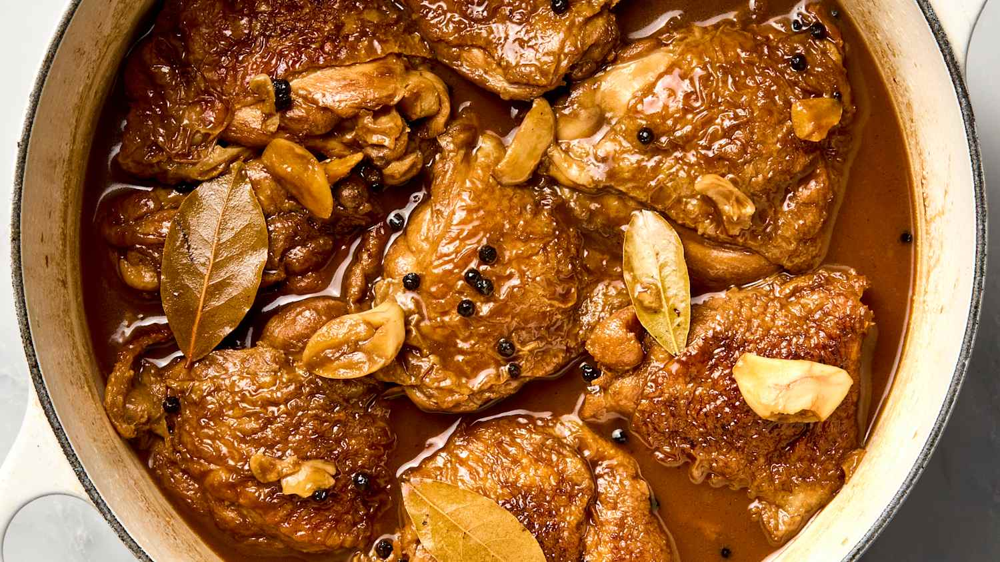

Home
Adobo

Description
Filipino adobo is a beloved Philippine national dish featuring meat (usually chicken, pork, or both) marinated and simmered in soy sauce, vinegar, garlic, bay leaves, and black peppercorns.
Known for its savory, tangy, and slightly sweet flavor profile, this stew is tender, often reduced to a glaze, and typically served with rice.
Ingredients
- Pork belly
- Chicken
- Soy sauce
- Vinegar
- Garlic
- Bay leaves
- Black peppercorns
Steps
- Combine the pork belly, soy sauce, and garlic then marinade for at least 1 hour
- Heat the pot and put-in the marinated pork belly. Cook this all up for a few minutes
- Pour the remaining marinade including the garlic.
- Add water, whole peppercorn, and dried bay leaves. Then bring your mixture to a boil. Simmer for 40 minutes to 1 hour
- Put the vinegar inside and simmer for 12 to 15 minutes
- Add salt to taste
- Serve hot. Share and enjoy!